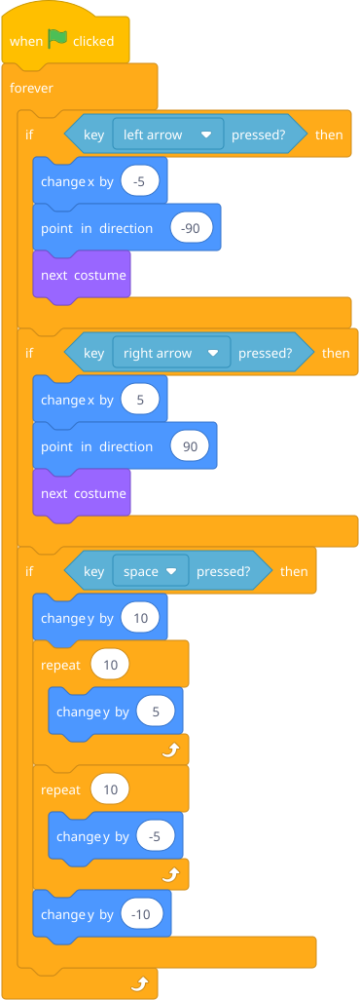
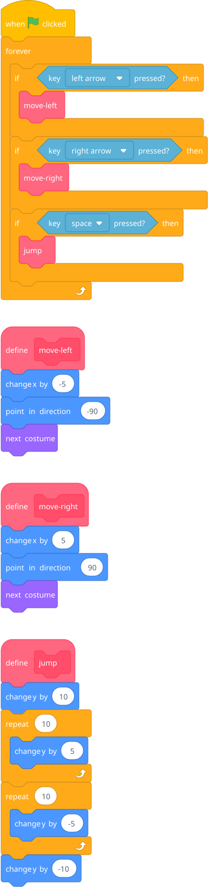

Pull up one of his bigger projects. The scripts are probably getting long and tangled. Ask: "If I asked you to change how the character jumps, where would you look?" He'll struggle to find it.
Introduce My Blocks (custom blocks). Refactor the jump into a jump block, the shooting into a shoot block. Suddenly the main game loop reads like plain language.
Before (messy — the forever loop is a wall of blocks):

After (clean — each block is a named action):

Blocks to point out: Go to "My Blocks" category → "Make a Block" → type a name → click OK. This creates a define hat block and a new block you can drag into your scripts. The define block is where you put the implementation — what the block actually does. The block itself (the one you drag into forever) just calls it.
Analogy that'll click for him: Custom blocks are like the sub-assemblies he builds with household items. You build the wheel separately, then just attach it to the car. You don't rebuild the wheel every time.
Key benefit to show him: Now when he wants to change how jumping works, he goes to the define jump block. He doesn't have to search through a giant script. And if he wants to add jumping somewhere else (maybe an enemy jumps too), he just uses the same block.